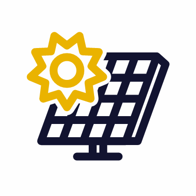
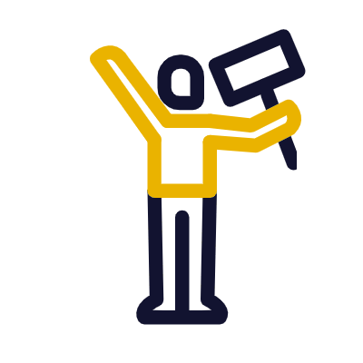
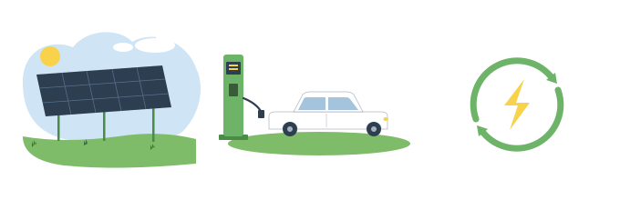
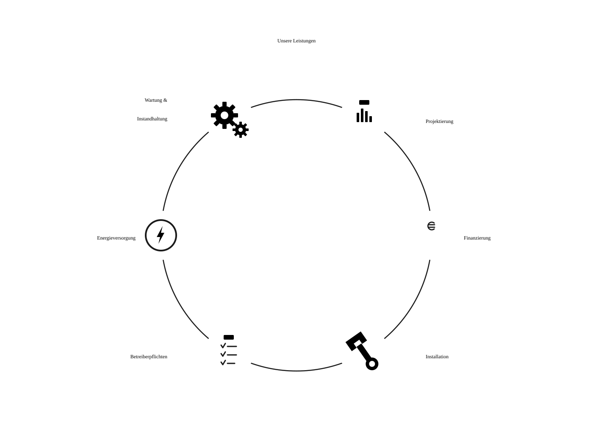

Design System
Sozial. Regional. Demokratisch.
Marke · Farbe · Typografie · Ikonographie · Komponenten · Bamberg · Würzburg · Franken
Die Marke
Eine Bürgerenergiegenossenschaft in Franken. Erneuerbare Projekte, die demokratisch ihren Mitgliedern gehören. Kein Konzern, keine Gewinnmaximierung. Die Ansprache ist du — warm, gemeinschaftlich, missionsgetrieben.
Farbe · Ink & Text
Regel 1: Fließtext ist immer Navy (Web) oder Schwarz (Print) — niemals ein Akzent.
Farbe · Brand Accents
Grün = CTAs, Tags, Erfolg, Feature-Flächen und große Display-Zahlen auf Hell. Regel 2 — Gelb ist Fläche, nie Text: trägt schwarzen Text (14,90:1), nie als Schrift auf hellem Grund, maximal als Zahlen, CTAs, Tags etc auf grünem Hintergrund.
Farbe · Highlight
Regel 3 — Hebt hervor: Lila markiert Rezensenten-Namen und aktive Formularfelder (Fokus & Rahmen) — sparsam, nie Fließtext. Große Display-Zahlen sind Grün. Lila auf Weiß = 6,0:1.
Regel 4 — Lila nie auf Grün: Auf grünem Hintergrund übernimmt Gelb alle Akzente — Kennzahlen, CTAs, Banner. Lila bleibt hellen Flächen vorbehalten.
Farbe · Functional
Bewusst reduziert: Erfolg (Grün) und Warnung (Bernstein, nicht das Marken-Gelb). Formular-Fehler nutzen ebenfalls Warning.
Surfaces · Web vs. Dokument
Web — Default
Feature
Feature-Deep
Weiße Cards sind Standard, Tiefe über Schatten. Farbige Feature-Cards sind Akzent — max. eine pro Gruppe. Warmes Cream-Paper nur für Dokumente/PDF via .fei-paper.
Typografie
Eyebrow → Headline → Lead ist der wiederkehrende Sektions-Auftakt. Drei-Wort-Triaden sind ein Marken-Stilmittel.
Ikonographie · Animated Outline Icons


21 looping GIFs (400×400, ~62 Frames) · Navy-Outline + Marken-Gelb #FFE600 · 40–96px · Raster, nicht umfärbbar · nie auf Gelb.
Ikonographie · Illustrationen & UI-Icons


Zwei flache Marken-SVGs (PV / E-Mobilität / Kreislauf · Leistungen). UI-Utility-Icons: 2px-Stroke-Linienicons im Heroicons-Stil, erben currentColor.
Komponenten
Buttons & Pills
Stat Block
Cards · weiß + Feature
Input
Button · Badge · Tag · Card · ServiceCard · StatBlock · Input · Accordion · Avatar · BrandIcon · Eyebrow.
Barrierefreiheit
Body immer Ink — Navy/Schwarz, nie ein Akzent.
Gelb ist Fläche, kein Text — trägt schwarzen Text.
Lila hebt hervor: Rezensenten-Namen & Formularfelder.
Nutzung
Der Einstiegspunkt importiert alle Tokens & Fonts. Komponenten kodieren nie eine feste Surface-Farbe — derselbe Code funktioniert auf Web (weiß) und im Dokument-Kontext (Cream).
Sozial. Regional. Demokratisch.